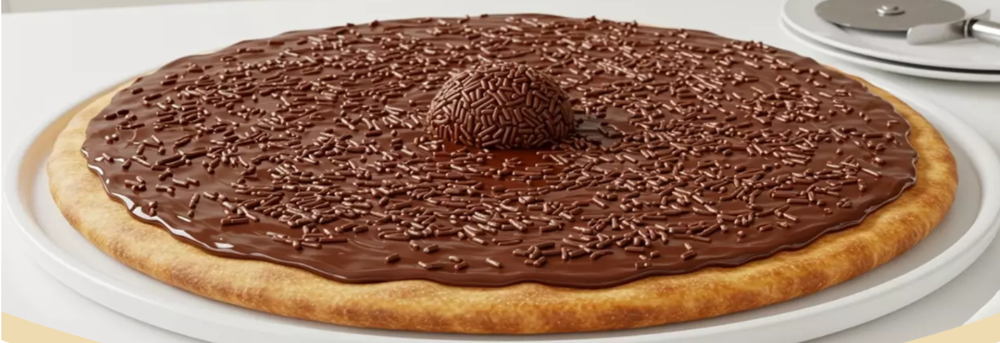
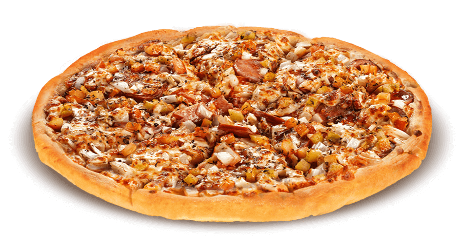

Matriz, Curitiba - PR, 82590-300




Matriz, Curitiba - PR, 82590-300

A pizzaria Sabor da Vila começou pequena e deu super certo no início. O dono, Marcelo, animado com o movimento, resolveu abrir outra unidade maior sem se planejar direito. Vieram dívidas, contas altas e pouco controle financeiro. Resultado: faliu pela primeira vez.
Depois de um tempo, ele tentou de novo. Voltou mais experiente, investiu em delivery e o negócio cresceu outra vez. Só que, com o aumento dos custos e medo de subir os preços, acabou vendendo muito sem ter lucro. As dívidas voltaram e a pizzaria faliu pela segunda vez.
No fim, ele aprendeu que vender bastante não significa ganhar dinheiro — sem organização e lucro, o negócio não se mantém.
Mexicana – Molho de tomate, mussarela, calabresa, cebola, pimentão e orégano.
Mussarela – Molho de tomate, mussarela e orégano
Calabresa – Mussarela, calabresa fatiada e cebola
Marguerita – Mussarela, tomate, manjericão e azeite
Portuguesa – Mussarela, presunto, ovo, cebola, pimentão e azeitona
Frango com Catupiry – Frango desfiado e Catupiry
Pequena: R$30 | Média: R$40 | Grande: R$50
